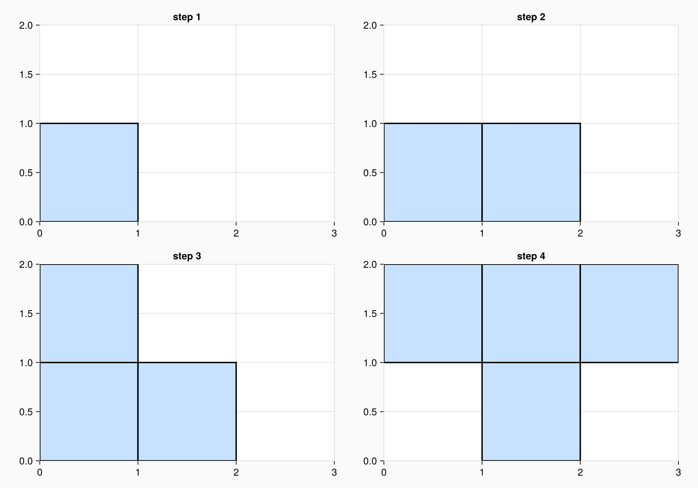

Tutorial
This page walks through the package in the order you would usually need it: build a shape, look at it, compare shapes up to symmetry, enumerate them, take them apart and put them together, and plot them.
Building and printing a shape
The easiest way to write down a shape is an ASCII drawing: # is a filled cell and . an empty one. Whitespace is ignored, so drawings can be indented.
T = poly"""
###
.#.
"""4-cell Polyomino (2×3):
###
.#.The printed form is the same drawing, so you can paste it back into poly"""...""". Inside a collection a polyomino prints on one line, as a constructor call:
[T, poly"##"]2-element Vector{Polyomino}:
Polyomino([(1, 2), (2, 1), (2, 2), (2, 3)])
Polyomino([(1, 1), (1, 2)])You can also build a polyomino from any collection of (r, c) cells. Rows grow upward, and the shape is shifted so its smallest row and column are 1:
Polyomino([(10, 10), (10, 11), (11, 10)]) == poly"""
#.
##
"""trueThe constructor throws if the cells are not edge-connected.
Cells, size and membership
A Polyomino behaves like a read-only set of cells:
length(T), size(T) # 4 cells, 2 rows × 3 columns(4, (2, 3))coordinates(T) # sorted (r, c) cells; (1, 2) is the stem4-element Vector{Tuple{Int64, Int64}}:
(1, 2)
(2, 1)
(2, 2)
(2, 3)(1, 2) in T, (1, 1) in T(true, false)[r for (r, c) in T] # iterate over the cells4-element Vector{Int64}:
1
2
2
2Symmetry
== compares fixed polyominoes: the same shape in the same orientation, anywhere on the grid. Rotations and reflections are separate operations:
rotate90(T) # a quarter turn counter-clockwise4-cell Polyomino (3×2):
#.
##
#.rotate90(T) == T, is_equivalent(rotate90(T), T; symmetry = :rotation)(false, true)The symmetry keyword chooses how shapes are identified:
symmetry | shapes are identified up to | known as |
|---|---|---|
:translation | translation (the default) | fixed |
:rotation | translation and rotation | one-sided |
:full | translation, rotation, reflection | free |
canonical picks one representative per class. Use it as a Set or Dict key when you want to count shapes up to symmetry:
S = poly"""
.##
##.
"""
Z = reflect(S)
canonical(S; symmetry = :full) == canonical(Z; symmetry = :full)truelength(orientations(S; symmetry = :full)), symmetry_group(S)(4, [:identity, :rot180])The S tetromino has 4 distinct orientations and is unchanged only by the identity and a half turn. The two numbers always multiply to 8, the number of symmetries of the square.
Enumerating shapes
polyominoes(n; symmetry) lists every polyomino with n cells, one per class:
[length(polyominoes(n; symmetry = :full)) for n in 1:8] # OEIS A0001058-element Vector{Int64}:
1
1
2
5
12
35
108
369polyominoes(4; symmetry = :full) # the 5 free tetrominoes5-element Vector{Polyomino}:
Polyomino([(1, 1), (1, 2), (1, 3), (1, 4)])
Polyomino([(1, 1), (1, 2), (1, 3), (2, 1)])
Polyomino([(1, 1), (1, 2), (1, 3), (2, 2)])
Polyomino([(1, 1), (1, 2), (2, 1), (2, 2)])
Polyomino([(1, 1), (1, 2), (2, 2), (2, 3)])The counts are tested against OEIS for n up to 10 (fixed A001168, one-sided A000988, free A000105). Enumeration keeps one level of shapes in memory, which is fine up to about n = 12 (505,861 fixed shapes).
Properties
ring = poly"""
###
#.#
###
"""
perimeter(ring), nholes(ring)(16, 1)Count the free octominoes that have a hole:
count(p -> nholes(p) > 0, polyominoes(8; symmetry = :full))6Splitting
all_splits lists every way to cut a shape into two connected pieces:
all_splits(T)3-element Vector{Tuple{Polyomino, Polyomino}}:
(Polyomino([(1, 1)]), Polyomino([(1, 1), (1, 2), (1, 3)]))
(Polyomino([(1, 2), (2, 1), (2, 2)]), Polyomino([(1, 1)]))
(Polyomino([(1, 1), (2, 1), (2, 2)]), Polyomino([(1, 1)]))unique_splits groups the cuts that give the same pair of shapes and counts them. With symmetry = :rotation, rotated pieces count as the same:
unique_splits(T; symmetry = :rotation)2-element Vector{Tuple{Polyomino, Polyomino, Int64}}:
(Polyomino([(1, 1)]), Polyomino([(1, 1), (1, 2), (1, 3)]), 1)
(Polyomino([(1, 2), (2, 1), (2, 2)]), Polyomino([(1, 1)]), 2)Joining
attach(a, b, offset) places cell (r, c) of b at (r, c) .+ offset in a's coordinates and returns the union. The two must share an edge and must not overlap:
attach(T, poly"#", (2, 1)) # the monomino lands on (3, 2), above the T's middle cell: a plus5-cell Polyomino (3×3):
.#.
###
.#.attachments(a, b; symmetry) lists every distinct shape you can get by placing b against a, in any orientation symmetry allows:
L = poly"""
#.
##
"""
attachments(L, poly"#"; symmetry = :full)4-element Vector{Polyomino}:
Polyomino([(1, 1), (1, 2), (1, 3), (2, 1)])
Polyomino([(1, 1), (1, 2), (2, 1), (2, 2)])
Polyomino([(1, 1), (2, 1), (2, 2), (3, 1)])
Polyomino([(1, 2), (2, 1), (2, 2), (3, 1)])These are the L, T, S and O tetrominoes: every free tetromino except the I contains an L tromino. Pass placements = true to also get the orientation of b and the offset used for each result.
Plotting
Plotting needs a Makie backend. Once one is loaded, visualize_polyomino and visualize_pathway become available. The picture is oriented like the ASCII drawing.
using CairoMakie
visualize_polyomino(poly"""
.#.
###
.#.
.##
""")![Example block output]()
visualize_pathway([poly"#", poly"##", L, T])